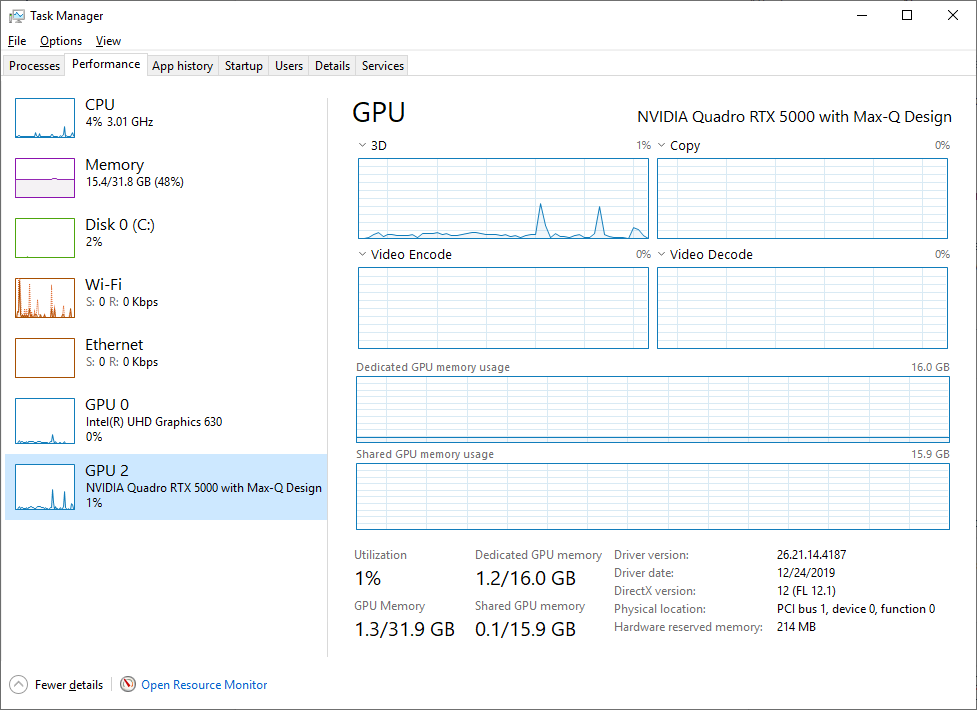

Isaac Sim 性能优化手册#
理解 Isaac Sim 性能#
仿真速度受多种因素影响。物理步长、场景复杂度、物理对象数量以及相机和传感器的数量/分辨率都会影响仿真性能。以下提示针对这些因素提供了常见的性能优化建议。
注意
Isaac Sim 基准测试 页面包含用于评估性能的常见工作流，以及基于特定工作流的具体优化建议。
注意
为了识别性能瓶颈，对仿真进行性能分析可能会有所帮助。有关使用 Tracy 分析器对仿真进行性能分析的详细信息，请参阅 使用 Tracy 进行性能分析。
注意
如需更多由智能体辅助的基准测试、性能分析、诊断和调优，请参阅 OmniPerf 智能体技能。这些技能涵盖 Isaac Sim 安装、基准测试脚本、Tracy 和 Nsight Systems 捕获，以及针对特定瓶颈的修复方案。
物理仿真优化#
物理步长：物理步长决定了每个物理仿真步骤的时间间隔。
较小的步长会产生更精确的仿真，但也会需要更多的计算资源，从而降低仿真速度。
较大的步长会加快仿真速度，但可能导致物理精度降低。
注意
在脚本中使用 SimulationManager.set_physics_dt(dt) 函数调整物理步长，其中 dt 是以秒为单位的期望步长。
PhysX 最小帧率限制 (
--/persistent/simulation/minFrameRate)：限制 PhysX 在应用更新期间为了追赶慢帧而运行的physics_dt子步数量。该值代表目标最小应用帧率；PhysX 不会在一次更新中运行过多的追赶子步，导致有效帧率低于该值。这是一个直接的性能与精度权衡选项：
提高限制值（例如设为
60）可以在负载下保持应用帧率，但会牺牲物理时间精度：当应用更新变慢时，PhysX 会截断子步预算，导致仿真时间落后于真实时间，仿真看起来像慢动作运行（或者等效地说，某些物理工作被有效地丢弃了）。当响应速度/渲染吞吐量比 1:1 的仿真时间与真实时间同步更重要时，请使用此设置。降低限制值（例如设为
15）允许 PhysX 在慢帧后运行更多的追赶子步，使仿真时间更接近真实时间，但代价是进一步降低可见帧率。当仿真时间精度或确定性比流畅度更重要时，请使用此设置。
此设置不等同于时间线的 targetFrameRate（通过 isaacsim.core.rendering_manager.RenderingManager.set_dt() 设置）或循环运行器的 /app/runLoops/main/rateLimitFrequency。有关三时钟架构，请参阅 架构：时间线、物理和渲染器。
注意
通过修改 --/persistent/simulation/minFrameRate=<value> 设置来调整 PhysX 最小帧率钳制值，其中 <value> 是目标最小应用帧率（单位：FPS）。
GPU 动力学：启用 GPU 动力学可以通过将物理计算卸载到 GPU 来潜在地加速模拟。
注意
只有当您的 GPU 足够强大且未被其他任务完全占用时，这才会带来益处。
在脚本中使用 SimulationManager.set_physics_sim_device(device) 函数启用或禁用 GPU 动力学，其中 device 是 cuda 或 cpu 的字符串值。在多 GPU 设置中，可以通过在字符串中传递设备索引来指定特定设备，例如 cuda:0。
禁用未使用的 Fabric 输出：在没有相机、直播流或 XR 的独立无头 GPU 张量工作负载中，向 Fabric 发布物理变换和速度会为每次物理获取增加 CPU 同步开销。如果您的工作负载不读取此 Fabric 输出，请将
/physics/fabricUpdateTransformations和/physics/fabricUpdateVelocities都设置为false。
通过 SimulationApp extra_args 配置传递 --/physics/fabricUpdateTransformations=false 和 --/physics/fabricUpdateVelocities=false，或者在创建 SimulationApp 后立即通过 Carbonite 设置同时设置两者。
重要
同时禁用这两个设置。只要启用其中任一设置，Fabric 就会运行同步，因此仅禁用 fabricUpdateTransformations 只会停止姿态更新，而不会消除同步开销。如果您的工作负载需要从 Fabric 读取变换或速度，请勿禁用这些设置。
注意
如果直接 GPU 工作负载需要 Fabric 输出，请对 /physics/fabricUseGPUInterop=true 和 /physics/suppressReadback=true 进行基准测试。GPU 互操作可以避免大型场景的 CPU 回读，但可能会降低小型场景的性能。
物理场景复杂度：场景中物理对象的复杂度会严重影响模拟性能。
简单碰撞体通常具有最佳性能。性能扩展性如下：
基本碰撞体（盒体、球体、胶囊体、平面）性能最佳。
凸网格次之（凸包或凸分解近似）
圆柱体是实现平滑、精确滚动行为的良好选择，但比低顶点凸网格近似更昂贵。
禁用或简化对当前模拟工作流非必需的碰撞体。例如，如果预计机器人不会与房间墙壁交互，可以禁用墙壁碰撞体，同时保持地板碰撞体启用。
同样，避免不必要的碰撞。尽可能减少对象重叠数量，以降低模拟碰撞阶段的开销。
注意
这适用于整个场景以及单个物理对象。高度铰接机器人的复杂碰撞体，以及墙壁、桌子等物体上的大量复杂碰撞网格，都会增加计算开销。
调整 PhysX 线程数：可以根据工作负载调整 PhysX 使用的线程数，以提升性能。
注意
这特别适用于基于 CPU 的物理模拟。将线程数降至 0 将在主线程上同步运行，在某些简单场景中可以实现加速。默认线程数为 8。使用 --/persistent/physics/numThreads=<value> 设置线程数。
查看 Physics Simulation Performance 指南以获取更多优化技巧！
机器人资产优化#
在 Tutorial 12: Asset Optimization 中提供了优化示例资产的分步教程。
合并网格工具：使用位于 Tools > Robotics > Asset Editors > Mesh Merge Tool 的 Merge Mesh 工具，可以实现更精简的资产结构并减少总网格数量。
场景图实例化：实例化支持可共享、可引用的 Prim 子图。使用指向共享引用资产的指针，可以减少具有重复相同网格（例如车轮）的资产的总内存使用量。
实例化的示例在 教程 12：资产优化 中进行了说明。关于可实例化资产的一般指南可在 可实例化资产 中找到。
注意
实例化在属性方面存在一些固有的限制，因为子对象无法修改来自父引用对象的属性。
简化碰撞体：碰撞体的计算开销较高。碰撞形状越简单，模拟的性能就越好。
减少接触点数量可显著提升性能。对于车轮碰撞体，建议使用简单的圆柱体或球体碰撞体，而不是网格碰撞体。这极大地简化了与地面的接触，提高了性能，并使机器人能够平稳地驶过地形。
对于机器人，请使用在满足所需精度级别的前提下尽可能简单的近似形状。例如，对于移动机器人，通常使用立方体近似其车身即可。
减少碰撞体的总数也是有益的。请考虑是否必须启用添加到资产中的每个碰撞体。选择性地启用/禁用碰撞体可以大幅降低计算开销。
注意
高精度应用需要使用网格碰撞体而非简化形状。存在多种不同的近似方法，每种方法的选择都是性能与精度之间的权衡。
禁用自碰撞：如果不需要，禁用 Articulation Root 的自碰撞可以减少计算负载，并在运行时实现显著加速。
注意
这高度依赖于具体用例。对于复杂的关节手模型，自碰撞对于避免穿透和提供真实的碰撞效果是必要的。对于具有某些内部几何结构的轮式移动机器人，计算除与外部环境碰撞之外的任何碰撞很可能是不必要的负载。
场景与渲染优化#
有关可用渲染器模式及其各自适用场景的概述，请参阅 渲染模式。
简化场景：降低场景复杂度、实现细节层次（LOD）、剔除不可见对象以及优化物理设置。
注意
Isaac Sim 提供了多种用于简化场景的工具
Scene Optimizer：在 USD 层级执行场景优化的 Kit 扩展
Mesh Merge Tool：Isaac Sim 实用工具，用于将多个网格合并为单个网格
注意
在实时仿真期间，gizmos（包括地面网格）会自动消失以优化性能。当仿真暂停或停止时，它们会重新出现。
使用 RTX Real-Time 2.0：（参见 RTX - Real-Time 2.0 模式）
RT2 是 Isaac Sim 中的新默认渲染模式。与之前的 RTX Real-Time 模式相比，它在精度和性能方面均有提升。
对于训练闭环（training-in-the-loop）或其他优先考虑吞吐量而非完整光传输的工作流，请考虑使用 RTX - Minimal 以获得更快的性能。在独立 Python 环境中，请在
SimulationApp启动配置中将renderer设置为MinimalRendering，并使用minimal_shading_mode选择简化的着色行为。有关模式选择指南，请参阅 渲染模式。可以降低 retrace 阈值以提高性能，但会导致结果略微偏向（biased）。其精度仍可与传统的 RTX Real-Time 模式相媲美。
"--/rtx/pathtracing/cached/retrace=0.1"禁用 Fractional Cutout Opacity 也可能提高性能，但会牺牲半透明效果的精度。
"--/rtx/pathtracing/fractionalCutoutOpacity=false"
注意
在某些较旧的硬件上，特别是 Ampere 代硬件，RT2 的性能可能低于 RTX Real-Time 模式。使用上述 Retrace Threshold 设置应能将 RT2 的性能提升至超过传统模式，同时保持相当的精度。
禁用材质和灯光：（有关特定的 RT2 和路径追踪设置，请参阅 RT2 模式）
场景中大量的材质会显著拖慢加载时间。可以通过设置以下内容来禁用材质加载：
"--/app/renderer/skipMaterialLoading=true"禁用灯光可以简化渲染负载并提升性能。
在渲染设置面板中关闭渲染功能（这些功能也有等效的 carb 设置，可通过 Python 进行配置）。Isaac Sim GUI 应用程序中没有非 RTX 渲染模式，但您可以禁用几乎所有功能（反射、透明度等）以提高执行速度。如果除非传感器明确需要，否则希望完全禁用渲染，可以使用无头应用程序工作流。
调整 DLSS 性能模式：DLSS 性能模式通过
--/rtx/post/dlss/execMode=<value>设置进行切换。各取值含义如下：Performance (
0) - 性能最优的设置，可降低显存占用和渲染时间，但会降低渲染质量。这是 Isaac Sim 中的默认值。Balanced (
1) - 在优化性能与图像质量之间取得平衡。Quality (
2) - 提供比 Balanced 模式更高的图像质量，但会增加渲染时间和显存占用。Auto (
3) - 根据当前输出分辨率选择最佳的 DLSS 模式。渲染 720p 相机时，Auto 模式倾向于选择 Quality，因此在以较低分辨率渲染相机时运行 Auto 模式可能会影响性能。
注意
DLSS 模式当前默认设置为 Performance。Performance 模式可提供最佳性能，但在以较低分辨率（720p 或更低）渲染相机时，可能会导致拖影等伪影。
在无头模式下禁用视口更新：使用
./python.sh在无头模式下运行时，仍会渲染默认视口。这会增加渲染可能不需要的视图的开销。为了提高性能，可以通过设置
SimulationApp配置参数disable_viewport_updates=True来禁用视口更新。from isaacsim import SimulationApp simulation_app = SimulationApp({"headless": True, "disable_viewport_updates": True})
如果不使用 SimulationApp，用户也可以使用以下代码片段禁用视口更新：
from omni.kit.viewport.utility import get_active_viewport viewport = get_active_viewport() viewport.updates_enabled = False
注意
仅在无头模式下运行时，才支持在 SimulationApp 中设置 disable_viewport_updates。对于流式传输用例，不应使用此选项。
禁用纹理流送：纹理流送是一项有助于最小化 GPU 内存消耗的功能，特别是在大型场景中。
禁用纹理流送可以带来积极的性能收益，但会导致 GPU 内存消耗增加。如果内存不足，还可能导致负面的用户体验影响，例如崩溃或某些纹理缺失。
要禁用纹理流送，请修改
/rtx-transient/resourcemanager/texturestreaming/enabled设置的值。"--/rtx-transient/resourcemanager/texturestreaming/enabled=false"
注意
不建议在所有用例中使用此功能。应根据具体情况使用，并针对每个工作流进行评估以确定其适用性。这可能会导致意外的渲染行为。
CPU 线程数优化#
有三个设置项用于控制 Isaac Sim 使用的 CPU 线程数。如果未设置这些选项（默认行为），Isaac Sim 将使用系统上所有可用的线程。独立 Python 工作流默认限制为 32 个线程，可以通过修改 SimulationApp 构造函数中的 limit_cpu_threads 参数来更改此限制。
--/plugins/carb.tasking.plugin/threadCount：设置 Carbonite 的最大工作线程数。--/persistent/physics/numThreads：设置用于物理模拟的 Carbonite 工作线程数。--/plugins/omni.tbb.globalcontrol/maxThreadCount：设置 Omniverse TBB 调度器的最大工作线程数。
生成过多的工作线程可能会导致 CPU 瓶颈。建议将 Isaac Sim 使用的 CPU 线程数限制为少于系统的虚拟核心数。目前的测试表明，对于大多数用例，32 个线程是最优选择。
设置 Carbonite 工作线程数也会将以下库的线程数设置为相同的值：
OMP_NUM_THREADS
KMP_NUM_THREADS
MKL_NUM_THREADS
OPENBLAS_NUM_THREADS
VECLIB_MAXIMUM_THREADS
NUMEXPR_NUM_THREADS
这样做是为了确保无论使用何种特定后端，不同库和框架之间都能保持一致的行为。
例如，在 Ubuntu 上：
./isaac-sim.sh --/plugins/carb.tasking.plugin/threadCount=16 --/plugins/omni.tbb.globalcontrol/maxThreadCount=16
独立 Python：
from isaacsim import SimulationApp
simulation_app = SimulationApp({"headless": False, "limit_cpu_threads": 16})
Linux 上的 CPU 调速器设置#
CPU 调速器决定 CPU 的运行时钟频率范围和缩放比例。这可能会成为 Isaac Sim 性能的限制因素。为了获得最大性能，应将 CPU 调速器设置为 performance。要修改 CPU 调速器，请运行以下命令：
sudo apt-get install linux-tools-common
cpupower frequency-info # Check available governors
sudo cpupower frequency-set -g performance # Set governor with root permissions
注意
并非所有系统都支持所有调频器（governor）。启用更高时钟频率的调频器通常更侧重于性能，可以为 Isaac Sim 带来显著更好的性能。
异步渲染#
异步渲染是一项允许渲染在独立于仿真线程的单独线程中运行的功能。在 Isaac Sim 中，每当 Isaac Sim 处于停止或暂停状态时，默认启用异步渲染。这极大地提高了 UI 响应速度和视口 FPS，尤其对于复杂场景而言效果显著。
异步渲染开关（默认）#
此设置位于 isaacsim.core.throttling 扩展中。若因意外行为需要禁用此功能，请在启动应用程序时将 exts."isaacsim.core.throttling".enable_async 设置设为 false。
./isaac-sim.sh --/exts/isaacsim.core.throttling/enable_async=false
注意
此设置仅在使用 isaacsim.exp.full.kit 运行时设为 true，而在通过基于 Python 的工作流运行时不会设为 true。如有需要，可以使用上述设置在其他工作流中手动启用该功能。
在某些使用场景中，特别是基于 Replicator 的 SDG 工作流，可能需要禁用异步渲染以确保行为正确。
运行时异步渲染#
支持在运行时进行异步渲染。要为基于 Python 的工作流启用异步渲染，请在运行命令中添加以下参数。对于完整的 Isaac Sim 工作流，还需在 isaacsim.core.throttling 扩展中禁用该开关，以便应用程序始终以异步方式运行。
./isaac-sim.sh --/exts/isaacsim.core.throttling/enable_async=false --/app/asyncRendering=true --/app/asyncRenderingLowLatency=true --/app/omni.usd/asyncHandshake=true --/omni/replicator/asyncRendering=true
./python.sh script.py --/app/asyncRendering=true --/app/asyncRenderingLowLatency=true --/app/omni.usd/asyncHandshake=true --/omni/replicator/asyncRendering=true
注意
此功能不保证性能提升。测试表明某些工作流可获得性能增益，但加速效果会因用例和硬件而异。异步渲染还会带来 CPU 开销，在简单场景下可能导致整体速度下降。在 CPU 密集型工作流中更有可能获得改进。
多 GPU 支持#
根据我们的多 GPU 基准测试，以下经验法则可能有助于提升多 GPU 性能。
注意
使用多个数据中心级 GPU 时，Isaac Sim 的确切性能指标可在此处找到。
添加与渲染相机数量相同的 GPU，但不要更多。 使用 2 个 GPU 渲染 2 个 720p 相机时，相比单 GPU 性能，我们观察到 72% 到 89% 的加速，但使用 4 个 GPU 仅带来 61% 到 81% 的提升。
渲染的相机越多，性能扩展性越好。 我们的 4 相机配 4 GPU 测试表现良好，整体加速约为 213% 到 233%，而 8 相机配 4 GPU 测试的扩展性更好，整体加速达到 271% 到 281%。
单个高分辨率相机在多个 GPU 上渲染更快。 这是前述规则的一个例外——如果你正在渲染单个高分辨率（4K 或更高）相机，多个 GPU 可以帮助加速渲染。
增加 GPU 数量不会改善场景加载时间。 GPU 数量不会影响加载 USD 所需的时间，也不会影响可加载的 USD 场景最大尺寸。
GPU 物理模拟仅使用 1 个 GPU。 增加 GPU 数量不会提升 GPU 物理模拟性能。
按分辨率加权的相机分配#
默认情况下，Kit 会将未显式指定 GPU 的传感器渲染产品按创建顺序以轮询方式分布到各个 GPU 上。在包含多个相机的工作流中，如果相机分辨率不同，或者某些 GPU 上已存在其他渲染产品，这种顺序可能导致渲染负载不均。创建所有相机渲染产品后，可通过以下方式启用按分辨率加权的分配：
from isaacsim.core.rendering_manager import ViewportManager
# Call after creating all camera render products.
assignments = ViewportManager.optimize_render_products()
该操作会为每个符合条件的相机渲染产品生成显式的 GPU 分配，从而覆盖其默认放置位置。当轮询放置不均衡时，这可以提升渲染吞吐量。然而，这并不能保证一定带来性能提升，因为默认放置可能已经均衡，且相机分辨率并不能代表所有渲染开销来源。
当仅有一个 GPU 处于活动状态，或符合条件的相机数量少于 GPU 数量时，该方法不会改变默认渲染器行为。请在目标硬件上分别测试启用和禁用此优化的工作流性能。
Nova Carter ROS 2 基准测试通过默认关闭的 --mgpu-optimize 标志暴露此操作。
在 Linux 上禁用 IOMMU#
根据 CUDA C++ Programming Guide，裸机 Linux 用户应禁用 IOMMU 以提升多 GPU 性能。
IOMMU 可能已在系统 BIOS 中禁用（具体操作说明因主板规格而异），或者可以通过命令行禁用：
sudo bash -c 'echo GRUB_CMDLINE_LINUX="amd_iommu=off" >> /etc/default/grub'
sudo update-grub
sudo reboot
重启后，IOMMU 应已禁用。
注意
如果启用了 IOMMU，在运行 Isaac Sim 时，您将在日志中的 nvidia-smi 输出下方收到类似 IOMMU is enabled. 的警告。
降低 GPU 内存利用率#
以下是有助于降低 Isaac Sim GPU 内存利用率的建议：
降低纹理流送预算。选择
Render Settings选项卡，然后选择Common设置。在Debug>Streaming Settings下，降低"Texture Streaming Budget (% of GPU memory)"。默认情况下，此值设置为 0.6，即 GPU 内存容量的 60%。为了减少 GPU 内存消耗，可以进一步降低该数值。对于独立 Python 工作流，您可以修改/rtx-transient/resourcemanager/texturestreaming/memoryBudget设置的值。如果可能，通过关闭不必要的视口或降低渲染相机分辨率来减少总渲染像素数。
实验性：减少潜在内存泄漏#
针对长时间运行工作流中可能出现的内存泄漏，以下实验性建议有助于降低 Isaac Sim 的 RAM 消耗：
- 调整内存分配器以减少长时间运行工作流中的内存泄漏，特别是在反复加载和卸载 stage 的场景中。
要更改分配器配置，请设置以下环境变量：
export GLIBC_TUNABLES=glibc.malloc.arena_max=1:glibc.malloc.mmap_max=0:glibc.malloc.mmap_threshold=2147483647
实用工具#
Windows#
任务管理器是一个出色的资源，可提供清晰直观的图表，并显示有关性能的各种系统信息的峰值使用情况。

点击“开始”图标
输入“任务管理器”
在任务管理器中，选择“性能”选项卡
在此窗格的左侧，您将看到 CPU、内存和 GPU 等各种图表。选择其中任意一项以获取更详细的数据视图。通常，如果其中任何一项出现飙升或达到峰值，您应调查其原因并开始进行故障排除。
Linux#
nvidia-smi 是在 Linux 上提供有用数据的极佳资源。
有关更多信息，请参阅以下文档：